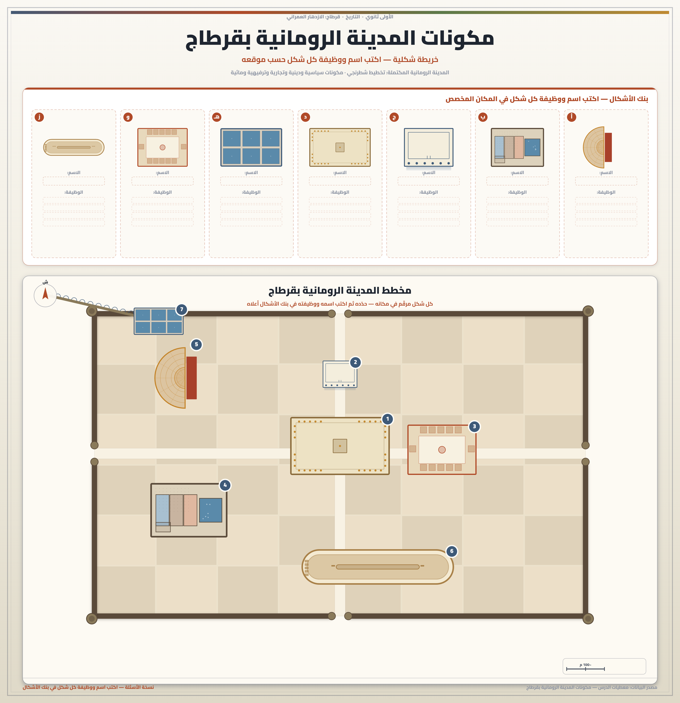
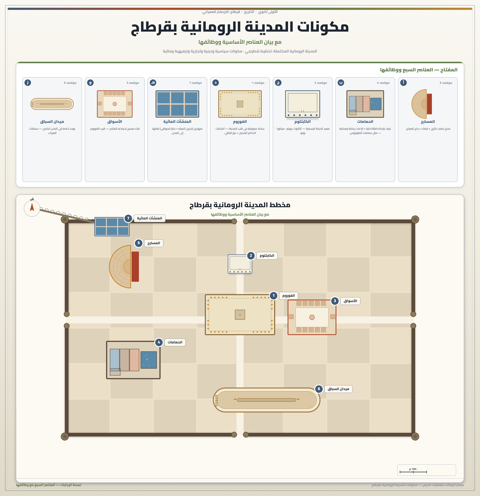

تمارين – قرطاج وإسهاماتها في الحضارة الرومانية: الازدهار العمراني
- التخطيط الشطرنجي:
- تخطيط عمراني تتميز به المدن الرومانية، تمتد فيه طرقات مستقيمة ومتقاطعة لتشكل مربعات، وكانت الطرقات تمتد من الشمال إلى الجنوب ومن الشرق إلى الغرب. وقد عرفته مدينة قرطاج بعد إعادة بنائها في العهد الروماني.
- الفوروم:
- ساحة عمومية مهيأة تحتل قلب المدينة الرومانية، وتأوي اجتماعات المواطنين لانتخاب الحكام البلديين، كما تلعب دورًا ثقافيًا.
- الكابتلوم:
- معبد الديانة الرسمية للدولة الرومانية، ويؤوي الثالوث الإلهي: يوبتير – ميناورا – يونو.
- الحمامات:
- منشآت ترفيهية رومانية توجد في كل المدن، مثال حمامات أنطونيوس بقرطاج، وتتكون من غرف باردة وأخرى دافئة وأخرى حارة، وتحتوي قاعات رياضة ومكتبة.
- المسارح:
- منشآت ترفيهية رومانية تتنوع إلى مسارح دائرية ونصف دائرية، ويتكون المسرح من 3 عناصر: مدرج نصف دائري أو دائري – فضاء على نفس الشكل – ركح للعرض.
- المنشآت المائية:
- منشآت عمرانية رومانية تتكون من الصهاريج (لتخزين المياه) والحنايا (وهي سواقي لنقل المياه إلى المدن).


تميزت المدينة الرومانية بقرطاج بتخطيط شطرنجي وباحتوائها على كافة العناصر العمرانية الأساسية، من أهمها: الفوروم وهي ساحة عمومية مهيأة تحتل قلب المدينة الرومانية، وتأوي اجتماعات المواطنين لانتخاب الحكام البلديين، كما تلعب دورًا ثقافيًا. والكابتلوم وهو معبد الديانة الرسمية للدولة الرومانية، ويؤوي الثالوث الإلهي: يوبتير – ميناورا – يونو. والأسواق والمحلات التجارية التي تتركز عادة قرب الفوروم، وتتركب من فناء فسيح وتوجد حوله المحلات والمتاجر. ومنشآت الترفيه التي تتمثل في المسارح والحمامات وميدان سباق الخيل، فالحمامات توجد في كل المدن (مثال حمامات أنطونيوس بقرطاج) وتتكون من غرف باردة وأخرى دافئة وأخرى حارة وتحتوي قاعات رياضة ومكتبة، والمسارح تتنوع إلى دائرية ونصف دائرية وتتكون من 3 عناصر (مدرج – فضاء – ركح)، وميدان سباق الخيل توجد خاصة في المدن الكبرى. وأخيرًا المنشآت المائية التي تتكون من الصهاريج والحنايا، وهي سواقي لنقل المياه إلى المدن.
| المجموعة | أهم العناصر | عدد العناصر المذكورة |
|---|---|---|
| المكونات السياسية والدينية | الفوروم، الكابتلوم | 2 |
| المكونات التجارية | الأسواق والمحلات التجارية | 1 |
| منشآت الترفيه | الحمامات، المسارح، ميدان سباق الخيل | 3 |
| المنشآت المائية | الصهاريج، الحنايا | 2 |
المصدر: معطيات الدرس حول مكونات المدينة الرومانية بقرطاج
- مقدمة: تقديم قرطاج بعد سقوطها سنة 146 ق.م وتحولها إلى ولاية رومانية.
- تطوير: أولاً. خصائص المدينة الرومانية (إعادة البناء والتخطيط الشطرنجي)؛ ثانياً. مكونات المدينة (الفوروم، الكابتلوم، الأسواق، منشآت الترفيه، المنشآت المائية)؛ ثالثاً. عوامل الازدهار العمراني (اهتمام الأباطرة، تنافس الوجهاء).
- خاتمة: حصيلة الازدهار العمراني بقرطاج ودلالته الحضارية.
مقدمة
بعد سقوط قرطاج سنة 146 ق.م تحولت إلى ولاية رومانية وشهدت ازدهارًا عمرانيًا ملحوظًا، تجلى في إعادة بنائها وتحويلها إلى نموذج للمدينة الرومانية المكتملة، ثم أصبحت عاصمة لولاية أفريقيا البروقنصلية.
تطوير
أولاً. خصائص المدينة الرومانية
بعد تخريب قرطاج، عمل الرومان على إعادة بناءها بتكوين مستوطنة رومانية في عهد الإمبراطور أقيانوس سنة 29 ق.م، ثم أصبحت المستوطنة الرومانية عاصمة لولاية أفريقيا البروقنصلية. وقد تميزت هذه المدينة بتخطيط شطرنجي تمتد فيه طرقات مستقيمة ومتقاطعة لتشكل مربعات، وكانت الطرقات تمتد من الشمال إلى الجنوب ومن الشرق إلى الغرب، وهو ما يمثل ميزة تتميز بها المدن الرومانية.
ثانياً. مكونات المدينة
تميزت المدينة الرومانية بقرطاج باحتوائها على كافة العناصر العمرانية الأساسية: فالفوروم ساحة عمومية مهيأة تحتل قلب المدينة وتأوي اجتماعات المواطنين لانتخاب الحكام البلديين وتلعب دورًا ثقافيًا. والكابتلوم معبد الديانة الرسمية للدولة الرومانية، ويؤوي الثالوث الإلهي (يوبتير – ميناورا – يونو). والأسواق والمحلات التجارية تتركز قرب الفوروم وتتركب من فناء فسيح تحيط به المحلات. ومنشآت الترفيه تتمثل في الحمامات التي توجد في كل المدن (مثال حمامات أنطونيوس بقرطاج) وتتكون من غرف باردة ودافئة وحارة وتحتوي قاعات رياضة ومكتبة، والمسارح التي تتنوع إلى دائرية ونصف دائرية وتتكون من 3 عناصر (مدرج – فضاء – ركح)، وميدان سباق الخيل الذي يوجد خاصة في المدن الكبرى. وأخيرًا المنشآت المائية التي تتكون من الصهاريج والحنايا، وهي سواقي لنقل المياه إلى المدن.
ثالثاً. عوامل الازدهار العمراني
يُفسّر هذا الازدهار العمراني بعاملين أساسيين: أولاً اهتمام الأباطرة الرومان بالبناءات العمومية حيث دعوا إلى مد الطرقات وبناء الجسور ومد القنوات، مثل الإمبراطور أقيانوس سنة 29 ق.م. وثانياً تنافس الوجهاء في تشييد المعالم والمنشآت العمومية قصد التفاخر والتقرب من السلط الرومانية للحصول على المواطنة الرومانية.
خاتمة
هكذا شهدت قرطاج في العهد الروماني ازدهارًا عمرانيًا بفضل اهتمام الأباطرة الرومان وأهمية الموروث البوني، وتجلى ذلك في تخطيطها الشطرنجي ومكوناتها العمرانية المتعددة التي جعلت منها نموذجًا للمدينة الرومانية المكتملة.
الخط الزمني: 814 ق.م: تأسيس قرطاج ... 264 ق.م: انطلاق الحروب البونية ... 146 ق.م: سقوط قرطاج ... 29 ق.م: إعادة بناء قرطاج.